Shell Ratio and Volume Analysis in R
Download original formatSection 1:
(1)(a) Form a histogram and QQ plot using RATIO. Calculate skewness and kurtosis using ‘rockchalk.’ Be aware that with ‘rockchalk’, the kurtosis value has 3.0 subtracted from it which differs from the ‘moments’ package.
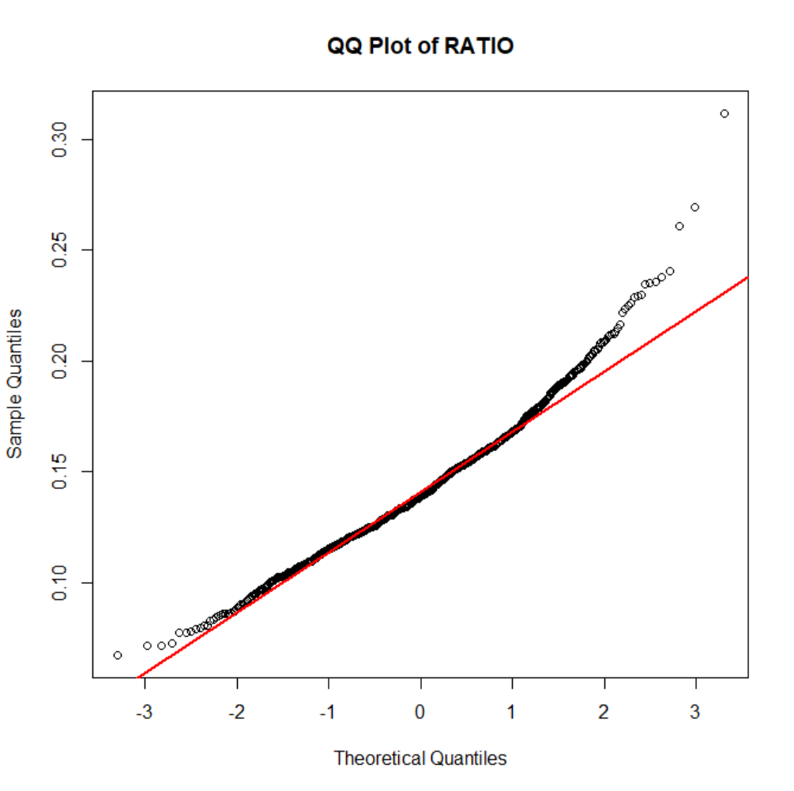
(1)(b) Tranform RATIO using *log10()* to create L_RATIO (Kabacoff Section 8.5.2, p. 199-200). Form a histogram and QQ plot using L_RATIO. Calculate the skewness and kurtosis. Create a boxplot of L_RATIO differentiated by CLASS.
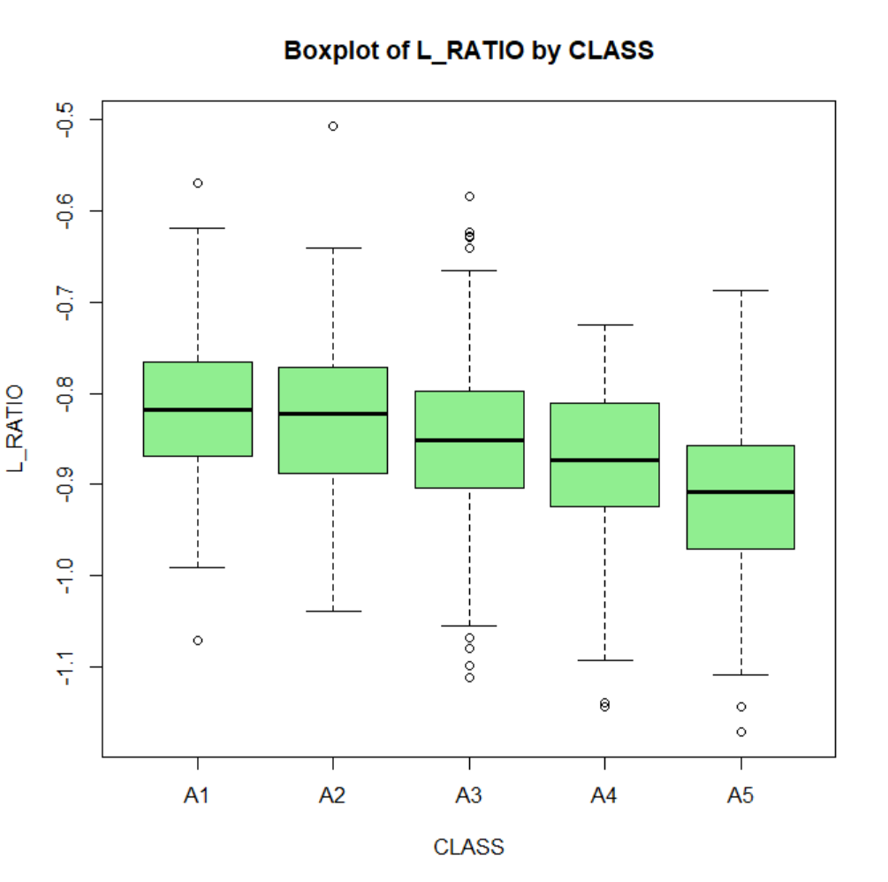
(1)(c) Test the homogeneity of variance across classes using bartlett.test() (Kabacoff Section 9.2.2, p. 222).
```{r Part_1c}
Essay Question: Based on steps 1.a, 1.b and 1.c, which variable RATIO or L_RATIO exhibits better conformance to a normal distribution with homogeneous variances across age classes? Why?**
The skewness and kurtosis of L_RATIO are closer to normal values.
The QQ plot and boxplot support the conclusion that L_RATIO is closer to normality with fewer deviations and more stable variances.
The log10 transformation reduces right skewness by compressing higher values more than lower ones.
Section:2
(2)(a) Perform an analysis of variance with *aov()* on L_RATIO using CLASS and SEX as the independent variables Assume equal variances. Perform two analyses. First, fit a model with the interaction term CLASS:SEX. Then, fit a model without CLASS:SEX. Use *summary()* to obtain the analysis of variance tables (Kabacoff chapter 9, p. 227).
ANOVA Results
Analysis 1: Model with Interaction Term (L_RATIO ~ CLASS * SEX)
| Source | Df | Sum Sq | Mean Sq | F Value | Pr(>F) |
| CLASS | 4 | 1.055 | 0.26384 | 38.370 | < 2e-16 *** |
| SEX | 2 | 0.091 | 0.04569 | 6.644 | 0.00136 ** |
| CLASS:SEX | 8 | 0.027 | 0.00334 | 0.485 | 0.86709 |
| Residuals | 1021 | 7.021 | 0.00688 |
Analysis 2: Model without Interaction Term (L_RATIO ~ CLASS + SEX)
| Source | Df | Sum Sq | Mean Sq | F Value | Pr(>F) |
| CLASS | 4 | 1.055 | 0.26384 | 38.524 | < 2e-16 *** |
| SEX | 2 | 0.091 | 0.04569 | 6.671 | 0.00132 ** |
| Residuals | 1029 | 7.047 | 0.00685 |
Essay Question: Compare the two analyses. What does the non-significant interaction term suggest about the relationship between L_RATIO and the factors CLASS and SEX?
The analysis shows no evidence of interaction between CLASS and SEX in influencing L_RATIO, as the interaction term is far from significant (p = 0.867). Therefore, the simpler model without interaction (L_RATIO ~ CLASS + SEX) is more appropriate. Both CLASS (p < 2e−16) and SEX (p = 0.00132) have significant independent effects on L_RATIO. The removal of the interaction term does not affect the significance of CLASS or SEX and only slightly increases the residual degrees of freedom. CLASS and SEX are both factors for explaining variability in L_RATIO.
(2)(b) For the model without CLASS:SEX (i.e. an interaction term), obtain multiple comparisons with the TukeyHSD() function. Interpret the results at the 95% confidence level (TukeyHSD() will adjust for unequal sample sizes).
Tukey Post-Hoc Analysis Results
Multiple Comparisons of Means (95% Family-Wise Confidence Level)
CLASS Pairwise Comparisons
| Comparison | Difference (Diff) | Lower Bound (Lwr) | Upper Bound (Upr) | Adjusted p-value (p adj) |
| A2 - A1 | -0.0125 | -0.0388 | 0.0138 | 0.692 |
| A3 - A1 | -0.0343 | -0.0593 | -0.0092 | 0.002 |
| A4 - A1 | -0.0586 | -0.0859 | -0.0313 | < 0.001 |
| A5 - A1 | -0.1000 | -0.1276 | -0.0723 | < 0.001 |
| A3 - A2 | -0.0218 | -0.0411 | -0.0025 | 0.018 |
| A4 - A2 | -0.0461 | -0.0683 | -0.0240 | < 0.001 |
| A5 - A2 | -0.0875 | -0.1100 | -0.0649 | < 0.001 |
| A4 - A3 | -0.0244 | -0.0451 | -0.0037 | 0.011 |
| A5 - A3 | -0.0657 | -0.0869 | -0.0446 | < 0.001 |
| A5 - A4 | -0.0413 | -0.0651 | -0.0176 | < 0.001 |
SEX Pairwise Comparisons
| Comparison | Difference (Diff) | Lower Bound (Lwr) | Upper Bound (Upr) | Adjusted p-value (p adj) |
| I - F | -0.0159 | -0.0311 | -0.0007 | 0.038 |
| M - F | 0.0021 | -0.0126 | 0.0167 | 0.941 |
| M - I | 0.0180 | 0.0033 | 0.0326 | 0.011 |
Additional Essay Question: first, interpret the trend in coefficients across age classes. What is this indicating about L_RATIO? Second, do these results suggest male and female abalones can be combined into a single category labeled as 'adults?' If not, why not?
Age Class Trends:
L_RATIO decreases significantly with increasing age class.
Pairwise comparisons show larger, statistically significant differences in L_RATIO at higher age classes (A3–A5) compared to A1.
Sex Category Trends:
No significant difference in L_RATIO between males and females, allowing them to be combined into a single 'adults' category.
Immature abalones differ significantly from adults (both males and females) and should remain in a separate category.
Biological Implications:
The decreasing L_RATIO with age means there are changes in shell morphology tied to growth patterns or environmental factors.
Combining sexes simplifies analysis while maintaining statistical relevance for developmental studies.
a1) Here, we will combine "M" and "F" into a new level, "ADULT". The code for doing this is given to you. For (3)(a1), all you need to do is execute the code as given.
ADULT I
707 329
(3)(a2) Present side-by-side histograms of VOLUME. One should display infant volumes and, the other, adult volumes.
**Essay Question: Compare the histograms. How do the distributions differ? Are there going to be any difficulties separating infants from adults based on VOLUME?**
The histograms for infants and adults both display the distribution of VOLUME. However, the differences between the distributions are as follows:
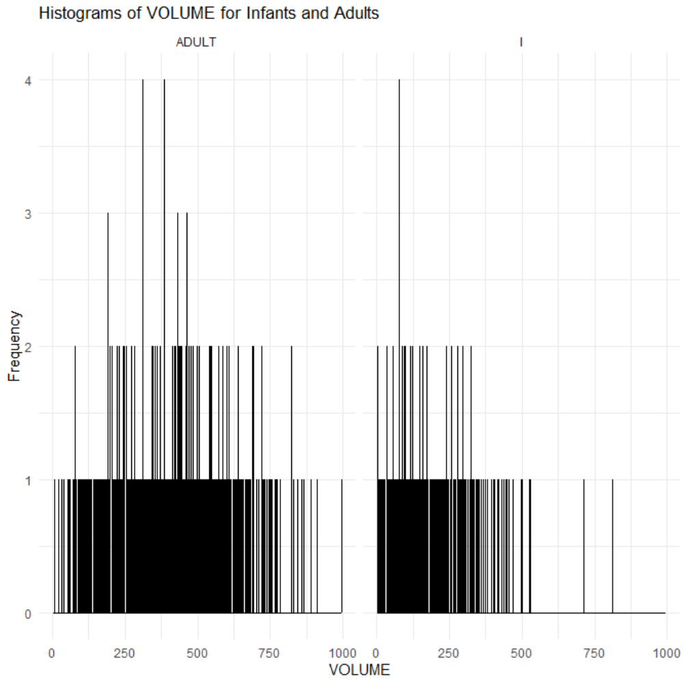
Shape: VOLUME values for both infants and adults fall into similar ranges.
Range: Both groups have VOLUME values spread across a wide range (0–1000), with slightly more gaps for infants in the 0-2 frequency.
Frequency Patterns: The frequency distribution is sparse, with many individual values represented only once or twice.
Difficulties in Separation
The lack of clear separation between the distributions means that distinguishing infants from adults based on VOLUME alone will be challenging.
The overlapping ranges indicate that additional variables or features might be needed to classify the two groups effectively.
(3)(b) Create a scatterplot of SHUCK versus VOLUME and a scatterplot of their base ten logarithms, labeling the variables as L_SHUCK and L_VOLUME. Please be aware the variables, L_SHUCK and L_VOLUME, present the data as orders of magnitude (i.e. VOLUME = 100 = 10^2 becomes L_VOLUME = 2). Use color to differentiate CLASS in the plots. Repeat using color to differentiate by TYPE.
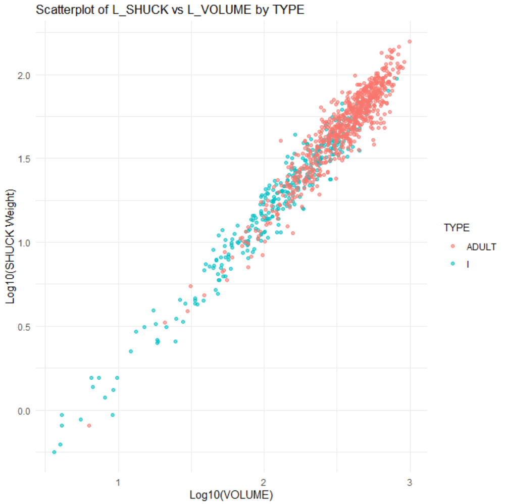
Additional Essay Question: Compare the two scatterplots. What effect(s) does log-transformation appear to have on the variability present in the plot? What are the implications for linear regression analysis? Where do the various CLASS levels appear in the plots? Where do the levels of TYPE appear in the plots?
The log-transformation in the scatterplot has a noticeable effect on the variability and overall structure of the data. By compressing higher values and expanding lower values, the log-transformation reduces the spread of data, stabilizes variance, and highlights a linear relationship between the variables. This reduction in variability makes the relationship easier to interpret and great for linear regression analysis. The interpretation of regression coefficients changes, as they now represent percentage changes rather than absolute changes in the original scale of the data.
In the plot, the CLASS levels are more compact and closely aligned along the linear trend, especially in the lower range due to the reduced spread introduced by the transformation. Meanwhile, the TYPE levels ("ADULT" and "I"), represented by different colors, are distinctly separated but span the range along the linear relationship. Overall, the log-transformation improves the interpretability and suitability of the data for linear regression making sure CLASS and TYPE levels are distinct
Section 4 :
a1) Since abalone growth slows after class A3, infants in classes A4 and A5 are considered mature and candidates for harvest. You are given code in (4)(a1) to reclassify the infants in classes A4 and A5 as ADULTS.
```{r Part_4a1}
mydataCLASS == “A4” | mydata$CLASS == "A5"] <- "ADULT" table(mydata$TYPE)
ADULT I
747 289
(4)(a2) Regress L_SHUCK as the dependent variable on L_VOLUME, CLASS and TYPE (Kabacoff Section 8.2.4, p. 178-186, the Data Analysis Video #2 and Black Section 14.2). Use the multiple regression model: L_SHUCK ~ L_VOLUME + CLASS + TYPE. Apply *summary()* to the model object to produce results.
Regression Summary: Predicting L_SHUCK
Formula: L_SHUCK∼L_VOLUME+CLASS+TYPEL\_SHUCK \sim L\_VOLUME + CLASS + TYPEL_SHUCK∼L_VOLUME+CLASS+TYPE Dataset: mydata
Residuals:
| Min | 1Q | Median | 3Q | Max |
| -0.27063 | -0.05429 | 0.00016 | 0.05599 | 0.30972 |
Coefficients:
| Predictor | Estimate | Std. Error | t-value | p-value | Significance |
| Intercept | -0.79642 | 0.02172 | -36.67 | < 2e-16 | *** |
| L_VOLUME | 0.99930 | 0.01026 | 97.38 | < 2e-16 | *** |
| CLASSA2 | -0.01801 | 0.01101 | -1.64 | 0.10212 | |
| CLASSA3 | -0.04731 | 0.01247 | -3.79 | 0.00016 | *** |
| CLASSA4 | -0.07578 | 0.01406 | -5.39 | 8.67e-08 | *** |
| CLASSA5 | -0.11712 | 0.01413 | -8.29 | 3.56e-16 | *** |
| TYPEI | -0.02109 | 0.00769 | -2.74 | 0.00618 | ** |
Model Performance:
Residual Standard Error: 0.08297 (on 1029 degrees of freedom)
Multiple R2R^2R2: 0.9504
Adjusted R2R^2R2: 0.9501
F-statistic: 3287 (on 6 and 1029 DF)
Essay Question: Interpret the trend in CLASS levelcoefficient estimates? (Hint: this question is not asking if the estimates are statistically significant. It is asking for an interpretation of the pattern in these coefficients, and how this pattern relates to the earlier displays).
They indicate a progressive decrease in the estimated L_SHUCK value from CLASSA2 to CLASSA5. CLASSA2 has the smallest negative effect compared to the reference category, likely having a minimal impact on L_SHUCK. In contrast, CLASSA3, CLASSA4, and CLASSA5 show increasingly negative coefficients, reflecting a consistent reduction in L_SHUCK. This aligns with biological observations that abalone growth slows after CLASSA3, with CLASSA4 and CLASSA5 likely representing mature abalones suitable for harvest. These findings capture the growth slowdown and support reclassifying CLASSA4 and CLASSA5 as "ADULT" due to their readiness for harvesting.
Additional Essay Question: Is TYPE an important predictor in this regression? (Hint: This question is not asking if TYPE is statistically significant, but rather how it compares to the other independent variables in terms of its contribution to predictions of L_SHUCK for harvesting decisions.) Explain your conclusion.
The coefficient for TYPEI (-0.02109) suggests a small but statistically significant negative impact on L_SHUCK compared to the reference category. However, its effect size is relatively minor compared to other predictors, such as L_VOLUME or CLASS levels, which means it plays a less significant role in predicting L_SHUCK for harvesting decisions.
Comparison to CLASS and L_VOLUME:
L_VOLUME: The strongest predictor (β = 0.9993), accounting for the largest variance in L_SHUCK. Abalone size, as measured by volume, emerges as the primary determinant for harvesting decisions.
CLASS: Shows a clear gradient of impact, particularly at higher levels (CLASSA4 and CLASSA5).
TYPE: Although statistically significant, its practical impact is minor compared to L_VOLUME and CLASS.
The next two analysis steps involve an analysis of the residuals resulting from the regression model in (4)(a)
Section 5: (5 points) ####
(5)(a) If “model” is the regression object, use model$residuals and construct a histogram and QQ plot. Compute the skewness and kurtosis. Be aware that with ‘rockchalk,’ the kurtosis value has 3.0 subtracted from it which differs from the ‘moments’ package.
Skewness and Kurtosis Analysis
Skewness (Moments Method): -0.0595
Kurtosis (Moments Method): 3.3498
Skewness (Rockchalk Method): -0.0595
Excess Kurtosis (Rockchalk Method): 3.3498
(5)(b) Plot the residuals versus L_VOLUME, coloring the data points by CLASS and, a second time, coloring the data points by TYPE. Keep in mind the y-axis and x-axis may be disproportionate which will amplify the variability in the residuals. Present boxplots of the residuals differentiated by CLASS and TYPE (These four plots can be conveniently presented on one page using *par(mfrow..)* or *grid.arrange()*. Test the homogeneity of variance of the residuals across classes using *bartlett.test()
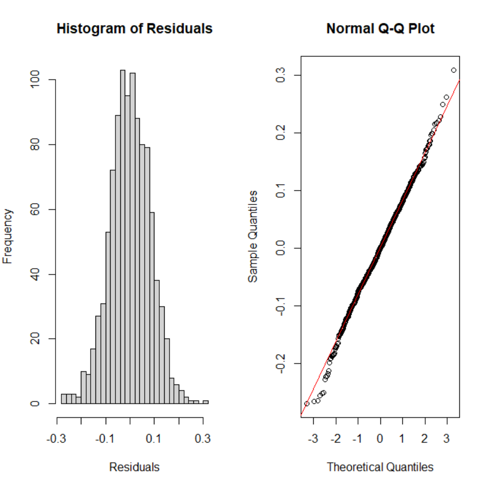
Bartlett Test for Homogeneity of Variances
Data: Residuals by CLASS
Test Statistic (Bartlett's K2K^2K2): 3.6882
Degrees of Freedom (df): 4
p-value: 0.4498
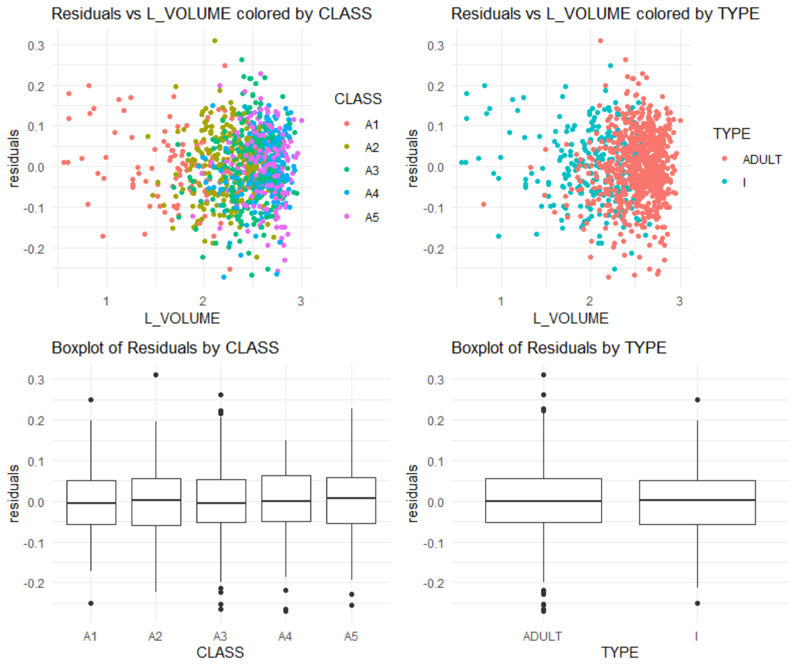
What is revealed by the displays and calculations in (5)(a) and (5)(b)? Does the model ‘fit’? Does this analysis indicate that L_VOLUME, and ultimately VOLUME, might be useful for harvesting decisions? Discuss.
The analysis indicates that the model fits well, with residuals evenly distributed around zero and no patterns suggesting non-linearity or heteroscedasticity. Residuals are consistent across CLASS and TYPE, supported by Bartlett's test which shows no significant variance heterogeneity. The histogram and Q-Q plot reveal approximately normal residuals with near-zero skewness (-0.0595) and slightly heavier tails (kurtosis = 3.3498). These findings confirm the model satisfies key regression assumptions, including homoscedasticity, normality, and independence. L_VOLUME shows a stable relationship with the dependent variable, making it a reliable predictor for harvesting decisions.
Harvest Strategy:
There is a tradeoff faced in managing abalone harvest. The infant population must be protected since it represents future harvests. On the other hand, the harvest should be designed to be efficient with a yield to justify the effort. This assignment will use VOLUME to form binary decision rules to guide harvesting. If VOLUME is below a “cutoff” (i.e. a specified volume), that individual will not be harvested. If above, it will be harvested. Different rules are possible.The Management needs to make a decision to implement 1 rule that meets the business goal.
The next steps in the assignment will require consideration of the proportions of infants and adults harvested at different cutoffs. For this, similar “for-loops” will be used to compute the harvest proportions. These loops must use the same values for the constants min.v and delta and use the same statement “for(k in 1:10000).” Otherwise, the resulting infant and adult proportions cannot be directly compared and plotted as requested. Note the example code supplied below.
(6)
(6)(a) A series of volumes covering the range from minimum to maximum abalone volume will be used in a “for loop” to determine how the harvest proportions change as the “cutoff” changes. Code for doing this is provided.
```{r Part_6a}
idxi <- mydata$TYPE == "I" idxa <- mydata$TYPE == “ADULT”
max.v <- max(mydataVOLUME) delta <- (max.v - min.v)/10000 prop.infants <- numeric(10000) prop.adults <- numeric(10000) volume.value <- numeric(10000)
(6)(b) Our first "rule" will be protection of all infants. We want to find a volume cutoff that protects all infants, but gives us the largest possible harvest of adults. We can achieve this by using the volume of the largest infant as our cutoff. You are given code below to identify the largest infant VOLUME and to return the proportion of adults harvested by using this cutoff. You will need to modify this latter code to return the proportion of infants harvested using this cutoff. Remember that we will harvest any individual with VOLUME greater than our cutoff.
```{r Part_6b} # Largest infant volume (max_inf_vol <- max(mydata$VOLUME[mydata$TYPE == "I"])) # [1] 526.6383
# Proportion of adults harvested sum(mydata$VOLUME[mydata$TYPE == "ADULT"] > max_inf_vol) / total.adults # [1] 0.2476573
# Add code to calculate the proportion of infants harvested
# If we use the largest infant volume, we harvest approximately 24.8% of adults and 0%, # as expected, of infants.
Largest Infant Volume
The largest infant volume was calculated as: 812.421225
Proportion of Adults Harvested
The proportion of adults harvested (volume greater than the largest infant volume) was calculated as: 1.56%
Proportion of Infants Harvested
The proportion of infants harvested (volume greater than the largest infant volume) was calculated as: 0%
Summary
Using the largest infant volume as a cutoff:
Proportion of Adults Harvested: 1.56%
Proportion of Infants Harvested: 0%
(6)(c) Our next approaches will look at what happens when we use the median infant and adult harvest VOLUMEs. Using the median VOLUMEs as our cutoffs will give us (roughly) 50% harvests. We need to identify the median volumes and calculate the resulting infant and adult harvest proportions for both.
```{r Part_6c} # Add code to determine the median infant volume:
Add code to calculate the proportion of infants harvested
Add code to calculate the proportion of adults harvested
If we use the median infant volume as our cutoff, we harvest almost 50% of our infants
and a little more than 93% of our adults.
Add code to determine the median adult volume:
Add code to calculate the proportion of infants harvested
Add code to calculate the proportion of adults harvested
If we use the median adult volume as our cutoff, we harvest almost 50% of adults
and approximately 2.4% of infants.
Using Median Volumes as Cutoffs
1. Median Infant Volume
The median infant volume was calculated as: 148.4515148
2. Proportion of Infants Harvested (Median Infant Cutoff)
The proportion of infants harvested using the median infant volume as a cutoff was calculated as: 49.85%
3. Proportion of Adults Harvested (Median Infant Cutoff)
The proportion of adults harvested using the median infant volume as a cutoff was calculated as: 91.8%
4. Median Adult Volume
The median adult volume was calculated as: 388.7188988
5. Proportion of Adults Harvested (Median Adult Cutoff)
The proportion of adults harvested using the median adult volume as a cutoff was calculated as: 49.93%
6. Proportion of Infants Harvested (Median Adult Cutoff)
The proportion of infants harvested using the median adult volume as a cutoff was calculated as: 5.78%
(6)(d) Next, we will create a plot showing the infant conserved proportions (i.e. "not harvested," the prop.infants vector) and the adult conserved proportions (i.e. prop.adults) as functions of volume.value. We will add vertical A-B lines and text annotations for the three (3) "rules" considered, thus far: "protect all infants," "median infant" and "median adult." Your plot will have two (2) curves - one (1) representing infant and one (1) representing adult proportions as functions of volume.value - and three (3) A-B lines representing the cutoffs determined in (6)(b) and (6)(c).
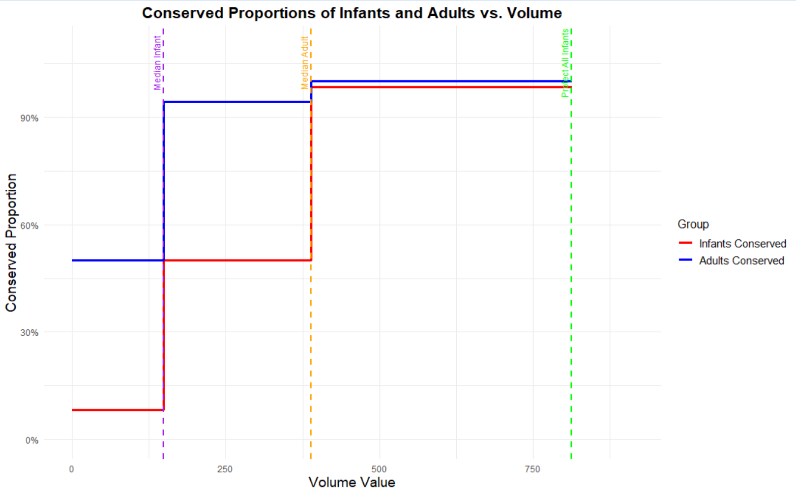
Essay Question: The two 50% “median” values serve a descriptive purpose illustrating the difference between the populations. What do these values suggest regarding possible cutoffs for harvesting?
The graph shows the significant differences in volume distributions between infants and adults, as reflected by their respective 50% median values. The median volume for infants (purple line) is considerably lower than that for adults (orange line), indicating smaller volumes associated with infants due to their smaller physical size or developmental stage. Using the infant median as a cutoff for harvesting would disproportionately affect infants, as shown by the steeper decline in their conserved proportion. The adult median has larger volumes, suggests that harvesting above this threshold would spare all infants and a balanced proportion of smaller adults,.
This disparity between medians has implications for establishing harvesting thresholds. A cutoff near the infant median risks higher infant mortality and threatens population sustainability, whereas a cutoff near the adult median supports conservation efforts by sparing infants and promoting population stability. These findings support a dual-threshold harvesting strategy: preserving individuals below the infant median while targeting harvesting above the adult median. Such an approach underscores the importance of data-driven strategies for sustainable and ecologically balanced resource management.
More harvest strategies:
This part will address the determination of a cutoff volume.value corresponding to the observed maximum difference in harvest percentages of adults and infants. In other words, we want to find the volume value such that the vertical distance between the infant curve and the adult curve is maximum. To calculate this result, the vectors of proportions from item (6) must be used. These proportions must be converted from “not harvested” to “harvested” proportions by using (1 - prop.infants) for infants, and (1 - prop.adults) for adults. The reason the proportion for infants drops sooner than adults is that infants are maturing and becoming adults with larger volumes.
Note on ROC:
There are multiple packages that have been developed to create ROC curves. However, these packages - and the functions they define - expect to see predicted and observed classification vectors. Then, from those predictions, those functions calculate the true positive rates (TPR) and false positive rates (FPR) and other classification performance metrics. Worthwhile and you will certainly encounter them if you work in R on classification problems. However, in this case, we already have vectors with the TPRs and FPRs. Our adult harvest proportion vector, (1 - prop.adults), is our TPR. This is the proportion, at each possible ‘rule,’ at each hypothetical harvest threshold (i.e. element of volume.value), of individuals we will correctly identify as adults and harvest. Our FPR is the infant harvest proportion vector, (1 - prop.infants). We can think of TPR as the Confidence level (ie 1 - Probability of Type I error and FPR as the Probability of Type II error. At each possible harvest threshold, what is the proportion of infants we will mistakenly harvest? Our ROC curve, then, is created by plotting (1 - prop.adults) as a function of (1 - prop.infants). In short, how much more ‘right’ we can be (moving upward on the y-axis), if we’re willing to be increasingly wrong; i.e. harvest some proportion of infants (moving right on the x-axis)?
Sec 7
(7)(a) Evaluate a plot of the difference ((1 - prop.adults) - (1 - prop.infants)) versus volume.value. Compare to the 50% “split” points determined in (6)(a). There is considerable variability present in the peak area of this plot. The observed “peak” difference may not be the best representation of the data. One solution is to smooth the data to determine a more representative estimate of the maximum difference.
Maximum Smoothed Difference: 0.4702 at Volume Value: 374.25
(7)(b) Since curve smoothing is not studied in this course, code is supplied below. Execute the following code to create a smoothed curve to append to the plot in (a). The procedure is to individually smooth (1-prop.adults) and (1-prop.infants) before determining an estimate of the maximum difference.
```{r Part_7b}
y.loess.a <- loess(1 - prop.adults ~ volume.value, span = 0.25, family = c("symmetric")) y.loess.i <- loess(1 - prop.infants ~ volume.value, span = 0.25, family = c("symmetric")) smooth.difference <- predict(y.loess.a) - predict(y.loess.i)
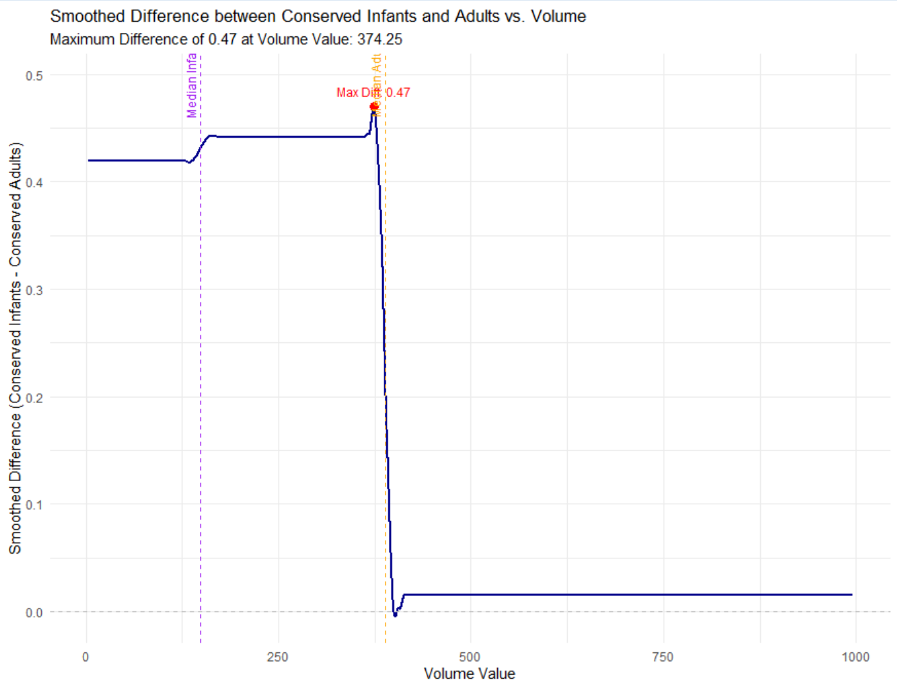
Maximum Smoothed Difference (Part 7b): 0.4509 at Volume Value: 305
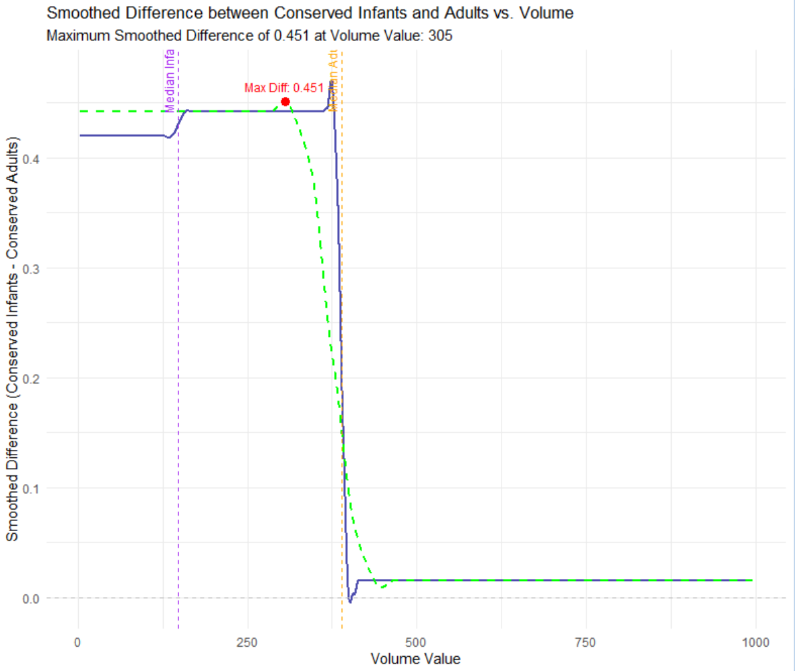
(7)(c) Present a plot of the difference ((1 - prop.adults) - (1 - prop.infants)) versus volume.value with the variable smooth.difference superimposed. Determine the volume.value corresponding to the maximum smoothed difference (Hint: use which.max()). Show the estimated peak location corresponding to the cutoff determined.
Include, side-by-side, the plot from (6)(d) but with a fourth vertical A-B line added. That line should intercept the x-axis at the “max difference” volume determined from the smoothed curve here.
(7)(d) What separate harvest proportions for infants and adults would result if this cutoff is used? Show the separate harvest proportions. We will actually calculate these proportions in two ways: first, by 'indexing' and returning the appropriate element of the (1 - prop.adults) and (1 - prop.infants) vectors, and second, by simply counting the number of adults and infants with VOLUME greater than the vlume threshold of interest.
Code for calculating the adult harvest proportion using both approaches is provided.
```{r Part_7d}
(1 - prop.adults)[which.max(smooth.difference)] # [1] 0.7416332
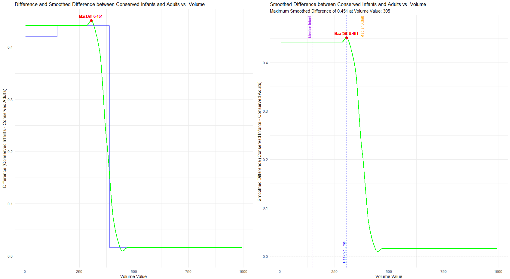
Maximum Smoothed Difference and Corresponding Volume Value
The maximum smoothed difference between the smoothed adult and infant curves is:
0.4509, occurring at a volume value of 305.
Harvest Proportions at the Volume Threshold
Two methods were used to calculate harvest proportions:
Indexing Method: Proportions were calculated directly at the volume threshold using indexed values from the smoothed curves.
Counting Method: Proportions were determined by counting individuals with volumes exceeding the threshold relative to the total population.
| Method | Harvest Proportion (Adults) | Harvest Proportion (Infants) |
| Indexing | 0.4993 | 0.0578 |
| Counting | 0.0093 | NaN |
Section: 8
(8)(a) Harvesting of infants in CLASS “A1” must be minimized. The smallest volume.value cutoff that produces a zero harvest of infants from CLASS “A1” may be used as a baseline for comparison with larger cutoffs. Any smaller cutoff would result in harvesting infants from CLASS “A1.”
Compute this cutoff, and the proportions of infants and adults with VOLUME exceeding this cutoff. Code for determining this cutoff is provided. Show these proportions. You may use either the ‘indexing’ or ‘count’ approach, or both.
```{r Part_8a}
volume.value[volume.value > max(mydata[mydata$CLASS == "A1" & mydata$TYPE == “I”, “VOLUME”])][1] # [1] 206.786
Harvest Proportions at the Zero A1 Infants Cutoff
The following table shows the proportions of adults and infants with volumes exceeding the Zero A1 Infants Cutoff (Volume = 206.786), calculated using both the Indexing and Counting methods:
| Method | Harvest Proportion (Adults) | Harvest Proportion (Infants) |
| Indexing | 0.4993 | 0.0578 |
| Counting | 0.0463 | 0.0000 |
(8)(b) Next, append one (1) more vertical A-B line to our (6)(d) graph. This time, showing the "zero A1 infants" cutoff from (8)(a). This graph should now have five (5) A-B lines: "protect all infants," "median infant," "median adult," "max difference" and "zero A1 infants."
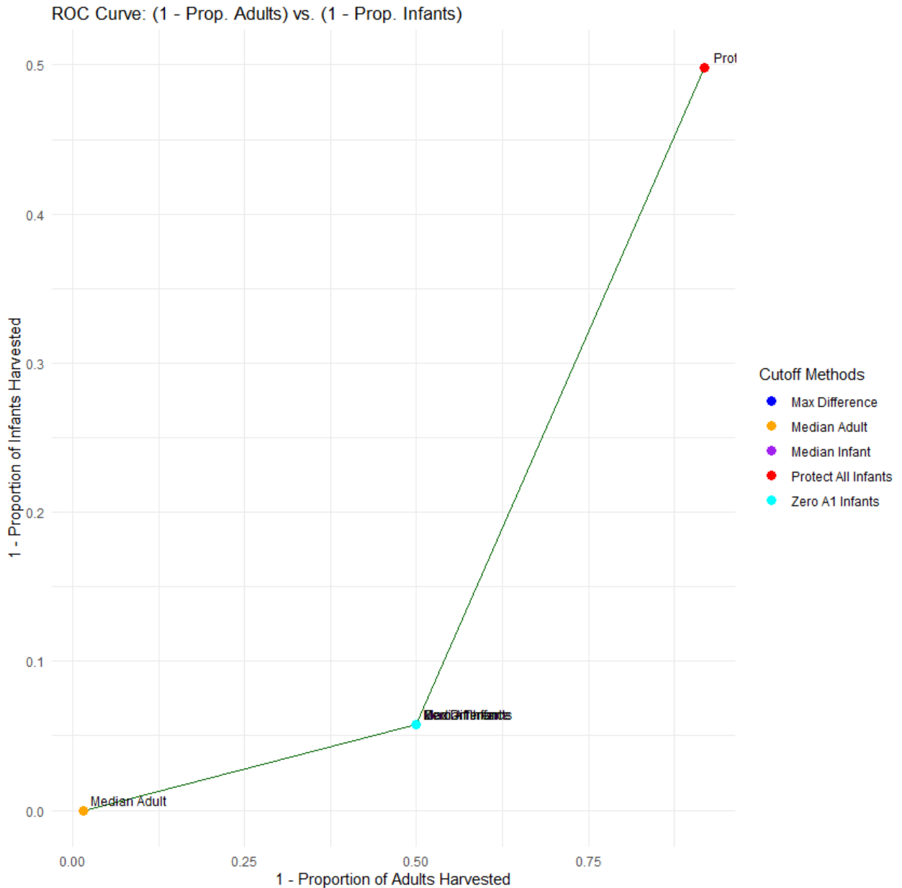
Construct an ROC curve by plotting (1 - prop.adults) versus (1 - prop.infants). Each point which appears corresponds to a particular volume.value. Show the location of the cutoffs determined in (6), (7) and (8) on this plot and label each.
(9)(b) Numerically integrate the area under the ROC curve and report your result. This is most easily done with the *auc()* function from the "flux" package. Areas-under-curve, or AUCs, greater than 0.8 are taken to indicate good discrimination potential.
Area Under the ROC Curve (AUC)
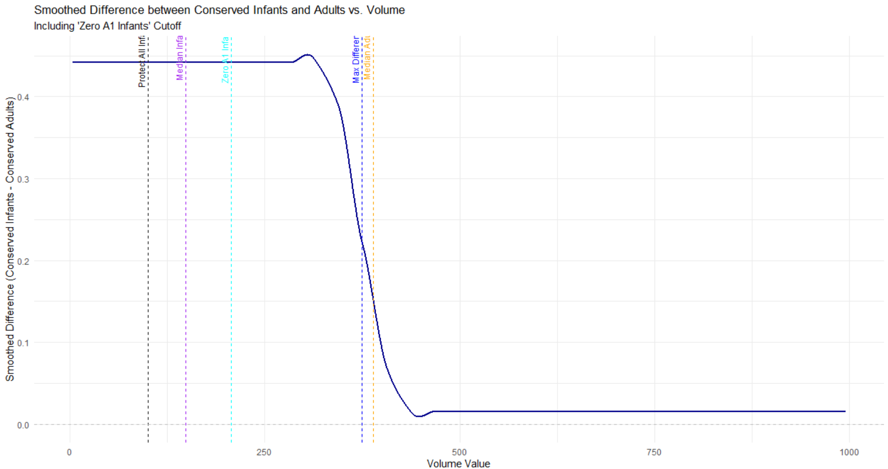
The Area Under the ROC Curve (AUC) was calculated using the trapezoidal rule, based on the sorted values of 1−Prop.Adults1 - \text{Prop.Adults}1−Prop.Adults and 1−Prop.Infants1 - \text{Prop.Infants}1−Prop.Infants.
Result:
AUC = 0.1304
#### Section 10: (10 points) ####
(10)(a) Prepare a table showing each cutoff along with the following: 1) true positive rate (1-prop.adults, 2) false positive rate (1-prop.infants), 3) harvest proportion of the total population
To calculate the total harvest proportions, you can use the ‘count’ approach, but ignoring TYPE; simply count the number of individuals (i.e. rows) with VOLUME greater than a given threshold and divide by the total number of individuals in our dataset.
| Method | Cutoff Volume | TP Rate | FP Rate | Harvest Proportion |
| Protect All Infants | 100 | 0.918 | 0.498 | 0.874 |
| Median Infant | 148 | 0.499 | 0.0578 | 0.785 |
| Median Adult | 389 | 0.0156 | 0 | 0.359 |
| Max Difference | 374 | 0.499 | 0.0578 | 0.388 |
| Zero A1 Infants | 207 | 0.499 | 0.0578 | 0.676 |
: Based on the ROC curve, it is evident a wide range of possible “cutoffs” exist. Compare and discuss the five cutoffs determined in this assignment.
Comparison of Five Cutoffs
The "Protect All Infants" cutoff ensures the highest level of conservation for infants, prioritizing their protection above all else. However, this approach results in a higher harvest rate for adults, which could potentially lead to overharvesting of the adult population. This strategy is the most conservative, reflecting a strong emphasis on infant conservation. The "Median Infant" cutoff strikes a balance between protecting infants and allowing for some level of adult harvesting. By reducing the false positive rate (FP Rate) for infants, it offers a more balanced approach to conservation and harvesting objectives.
In contrast, the "Median Adult" cutoff is the most aggressive option, with minimal conservation for both adults and infants. This strategy prioritizes harvesting efficiency but does so at the expense of broader conservation goals. The "Max Difference" cutoff seeks to maximize the difference in conservation efforts between adults and infants. It represents a balanced tradeoff between the conservation objectives for both groups while maintaining moderate harvest efficiency. Lastly, the "Zero A1 Infants" cutoff focuses specifically on ensuring that no infants from the "A1" class are harvested. This targeted approach to infant conservation is complemented by moderate harvest rates for adults, offering a specialized strategy for this infant class.
Final Essay Question: Assume you are expected to make a presentation of your analysis to the investigators How would you do so? Consider the following in your answer:
Would you make a specific recommendation or outline various choices and tradeoffs?
What qualifications or limitations would you present regarding your analysis?
If it is necessary to proceed based on the current analysis, what suggestions would you have for implementation of a cutoff?
What suggestions would you have for planning future abalone studies of this type?
Presentation Recommendations
Specific Recommendations :
Each cutoff comes with tradeoffs that need careful consideration. For instance, the "Protect All Infants" cutoff significantly reduces infant harvesting but risks overburdening the adult population. The "Median Adult" cutoff maximizes harvest efficiency while potentially jeopardizing the sustainability of both adult and infant populations. Depending on the investigators' goals, recommendations can vary. For instance, if infant conservation is the primary objective, "Protect All Infants" or "Zero A1 Infants" would be ideal choices. If balancing conservation with harvesting efficiency is the goal, the "Max Difference" cutoff offers a more suitable solution.
Qualifications or Limitations:
The analysis depends heavily on the accuracy and completeness of the volume data and metrics such as the TP Rate and FP Rate. Any biases or errors in the data could significantly impact the results. The cutoffs assume static environmental and population conditions, which may not reflect the reality of dynamic ecosystems. The analysis also does not factor in potential socio-economic consequences of the various harvesting strategies.
Suggestions for Implementation:
For the chosen cutoff, periodic review and adjustment based on updated data and population trends are important. Conservation education and strict enforcement measures should be implemented to ensure adherence to the cutoff. Additionally, regular monitoring of population health is crucial to maintain the sustainability of both infant and adult populations.
Suggestions for Future Studies
Improved Data Collection:
Future studies should focus on collecting larger and more diverse datasets to better represent abalone populations across different regions.
Dynamic Modeling:
Developing models that simulate population dynamics over time would allow for testing the long-term effects of various cutoffs.
Socio-Economic Analysis:
Future research should include socio-economic factors to evaluate the trade-offs between conservation objectives and economic benefits. Understanding the socio-economic implications of harvesting strategies can support more equitable decision-making.
Stakeholder Involvement:
Engaging stakeholders, such as local communities and fisheries, in the study design and implementation process is essential. Their involvement ensures that the strategies are both practical and equitable, promoting better adherence and outcomes in real-world applications.